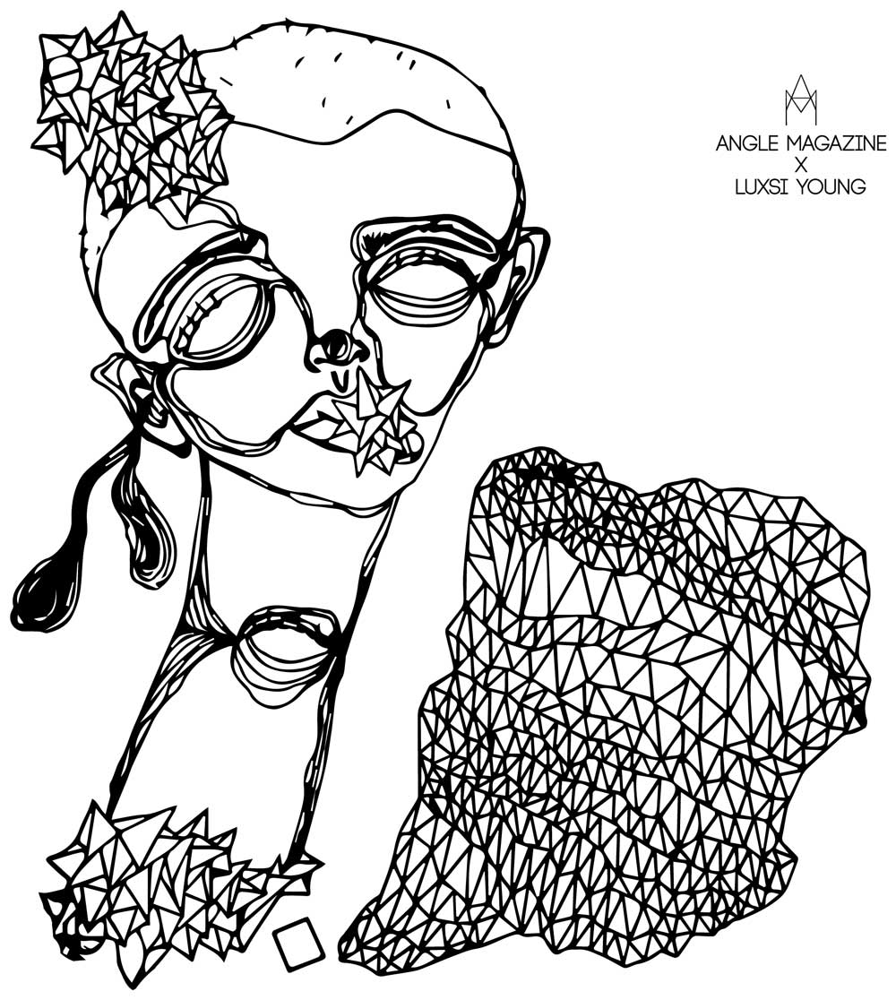

Portfolio: Design
Angle Magazine: T-Shirt Collaboration with Luxsi Young

The Angle Magazine logo that I helped design finally got a chance to test its ability to not overshadow artwork (which was mentioned in this post: Angle Magazine Logo). This time, Angle collaborated with Luxsi Young, a Korean illustrator, to design a T-shirt for Angle's annual Big Day South arts and music showcase.
We wanted to add the logo, but in doing so, we wanted to keep it as discreet as possible while still creating immediate brand recognition. We chose to stick with the simple A+M shape without the circular focus because, as you can see in Luxsi Young's design below, there are a lot of triangular shapes that match our logo's design. Not only that, but keeping away from our circular focus helped keep the logo more discrete. However, the logo's placement in the artist's white space and the t-shirt's chest area makes brand recognition quick and easy.
Huge thanks to Mesh Printing for their excellent work making this t-shirt design come alive!
Client: Angle Magazine
Date: February 2015
Project Checklist: Artist Collaboration, Brand Marketing, Merchandise Design
URL: anglemagazine.co.kr